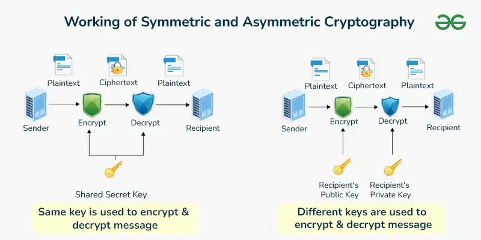

Theoretical Computer Science - Cryptography
What is this theoretical computer science topic about?
Cryptography is the study of mathematics and algorithms for finding methods to protect information and communications from unauthorized access or usage.
The main practice of cryptography is based on the following fundamental principles:
Modern cryptography involves the processes of encryption and decryption. Encryption is a process where readable information, known as plaintext, is scrambled and transformed into an unreadable form known as ciphertext, while decryption, the unscrambling of scrambled ciphertext back into readable plaintext information.
There are two main types of encryption, symmetric and asymmetric encryption. In symmetric encryption, the same key is used to encrypt and decrypt data. In asymmetric encryption, a pair of keys are used, a public and private key. The public key is public and accessible by anyone to encrypt the data, while the private key is held by only authorized users to decrypt the data. The key part (no pun intended) is that the public key cannot be used to find the private key.

What are some examples of how the topic has been applied to specific software?
Today, cryptography is an essential cybersecurity tool for protecting one's digital data and information from access by malicious threat actors. Said information may be chat messages, online calls, digital wallets, passwords, browsing traffic, or files and documents stored in the cloud. As such, many (though unfortunately not all) software applications and online services employ some form of encryption to protect our data.
- WhatsApp and Keybase use end-to-end encryption, a form of asymmetric encryption to encrypt chat messages and shared files
- Chrome, Firefox and other browsers use the HTTPS protocol, which uses asymmetric encryption to encrypt information such as login credentials that are exchanged between your browser and the website
- Windows 11's BitLocker feature uses AES encryption, a form of symmetric encryption to encrypt all the data on a computer's drive so it cannot be accessed even if your Windows login password or hard drive was stolen
Examples include:
Sources
- What is cryptography? (2025, November 17). https://www.ibm.com/think/topics/cryptography
- What is Cryptography? Definition, Importance, Types | Fortinet. (n.d.). Fortinet. https://www.fortinet.com/resources/cyberglossary/what-is-cryptography
- What is End-to-End encryption? | IBM. (2025, November 17). https://www.ibm.com/think/topics/end-to-end-encryption
- About end-to-end encryption | WhatsApp Help Center. (n.d.). https://faq.whatsapp.com/820124435853543
- Keybase Book. (n.d.). https://book.keybase.io/security
- Cloudflare. (n.d.). What is HTTPS? | Learning Center. https://www.cloudflare.com/learning/ssl/what-is-https/
- Officedocspr. (n.d.). BitLocker Overview. Microsoft Learn. https://learn.microsoft.com/en-us/windows/security/operating-system-security/data-protection/bitlocker/